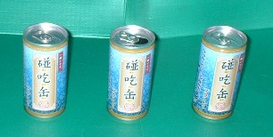

車で走行中、トイレに行きたくなった。ふとみるとゲームセンターがある。（うん、あそこで....） 車を停めて建物に入った。用を足したあと、店内をぶらぶら。すると一角にネット麻雀の機械があった。
（おお、これがウワサに聞くＭＪ２か....） 見るともなくみているうちに、かたわらの看板に気がついた。そこには、
[平日の午前10時〜午前11時に来店されたお客様には、もれなく特製ウーロン茶、碰吃缶をプレゼント。お一人様、何本でもＯＫ。ただしゲームを始める前にお申し付けください」とあった。
（なんと、碰吃缶とな。これはぜひともゲットしなければ）。
日をあらためて出かけた。
午前１０時に着くと、σ(-_-)が一番乗り。麻雀ゲームのところへ行ったが、従業員もいない。探しに行くと、フロアの反対側、ゲーム機から50Ｍも離れたところに数人いた。そのうちの１人に声を掛けた。
「あの、麻雀がしたいんですが」
「はい、どうぞ」
「あれって、今の時間はウーロン茶のサービスがついているんですよね」
「あ、はい」
「それ、ほしいんですが」
「はい、あとからお席までお持ちします」
というのでゲーム機のとこまへ戻って、１人、ゲームをはじめた。と云っても、まずはユーザー登録から。そんなことをしているうちに、女性従業員がウーロン茶を持ってきた。そこで念のため、
「これって、何本でもいいんですか？」
「いえ、お客様１人に１本です」
「ふ〜ん、しかし“お一人様、何本でもＯＫ”って書いてあるんですが....」
「えっ」と云いながら見直す従業員。
「あ、ホントですねぇ...それじゃあ何本でもいいです」
「それじゃあ最初から５本くらいもらってもいいですか」
「いえ、あの、その....」
「それじゃあ、どういう風にすると何本かもらえるんですか」
「あの....１ゲーム１本くらいで....」
「１ゲーム終わるたびに店員さんに云いにゆくんですか」
「いえ、あの、近くにいる者に声を掛けてくれれば....」
周りに誰もいない状態で、どうやって声を掛けるのかと思ったが、まぁ、とにかくゲームを始めた。１ゲーム早く終われと思っているから、出るチー、見るポン、メッタ切り。見るまに終わったが、なんとダントツで９級に昇格した。(^-^；
まわりを見回したが、お客もまだσ(-_-)だけ。もちろんその辺りに従業員は一人もいない。仕方がないのでゲームを中止し、また50Ｍ離れたところまで従業員を探しに行った。前と同じ辺りで、今度は男性従業員を見つけた。同じことを云うと、「分かりました。お席にお持ちします」
またゲーム機に戻って、ゲームを再開。結果８級に昇格。しかしさすがにここでゲームを中断して、もう一度50Ｍを歩くのは面倒だと思った。おまけにぼつぼつ客が入ってきており、麻雀ゲーム機にもそこかしこに客が座っている。席をあけると続きができなくなるおそれがある。
（困ったな）と思っていると、ようやく従業員が通りかかった。さっそく声を掛けて、もう１本ゲット。これで３本ゲットしたので、もうゲームはどうでもよかった。しかしウーロン茶をもらった手前、もう少しゲームして帰ってきた。いまじゃあＭＪ２の７級プレーヤー。(^-^；
これが、その証拠の碰吃缶。うむ、余は満足じゃ(笑)

ところでついでの話だけんど、缶は、むかしは罐と書いた。いちおう缶は罐のた略字と云うことになっている。そしていまでは罐詰めではなく缶詰めと書く。しかし実は中国では、缶と罐はまったく別の字。発音だってまったく異なる。しかし日本では罐＝缶で通用してしまっている。まぁ、どうでもいいけど。(^-^；
＃両方とも水の容器という意味があるが、缶(fou)は水瓶、罐（guan）には鉄製の容器という意味がある）
オマケ
中国ではまったく別な字なのに、日本では同じ字として通用してしまっている例は他にもある。
むかしの中国では、幅（ふく）は布地の幅（はば）の単位（１幅＝２尺２寸）。転じて、布地以外でも用いられるようになった。その典型が道路幅。幅員10Mといえば、道路幅が10Mのこと。
しかし幅と書くのが面倒というので、略字として巾が用いられている。役所が立てた道路看板にも、堂々と巾員10Mなんて書いてある。自宅の近くにある川も、正しくは幅下川（はばしたがわ）だが、巾下川という標識が立っている。
しかしもともと幅（ふく）と巾（きん）はまったく別の字。巾（きん）は本来、布きれの意。いまでも布巾（ふきん）などと使われている。ハンカチだって、漢字では手巾と書く。後漢末期に黄巾（こうきん）の乱という大反乱があった。この反乱軍は、みんな目印に黄色い布を身につけていたので、黄巾賊（こうきんぞく)と呼ばれた。
そこで中国人が巾員10Mと書いてある標識を見たら、（どこに10Ｍの布があるんだろう。何のためにあるんだろう）と思うかもしれない。(^-^；
|